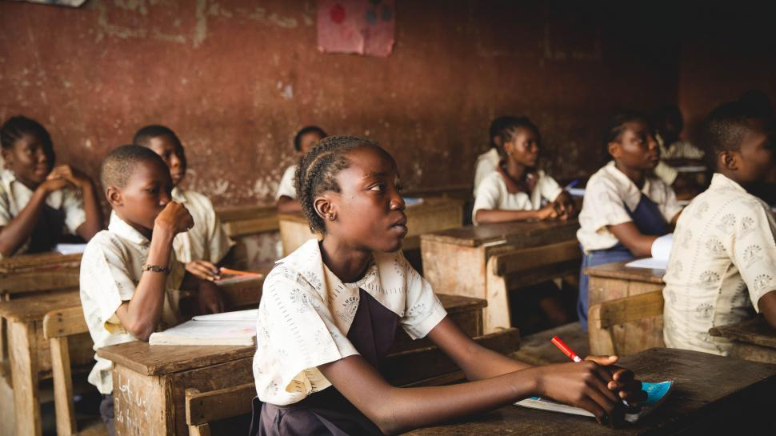
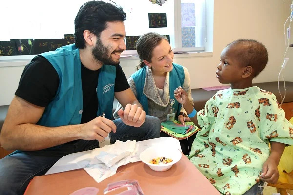
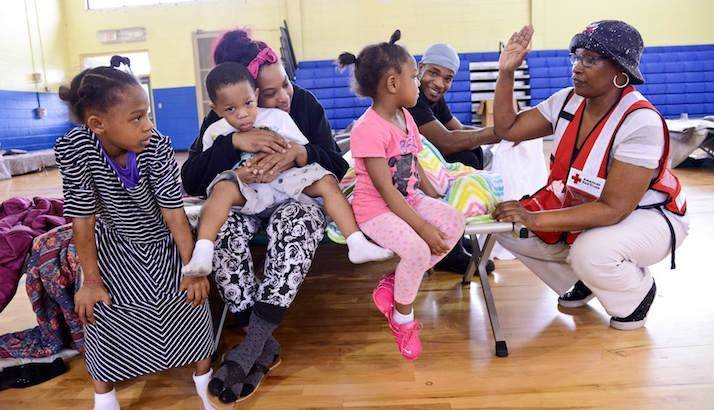
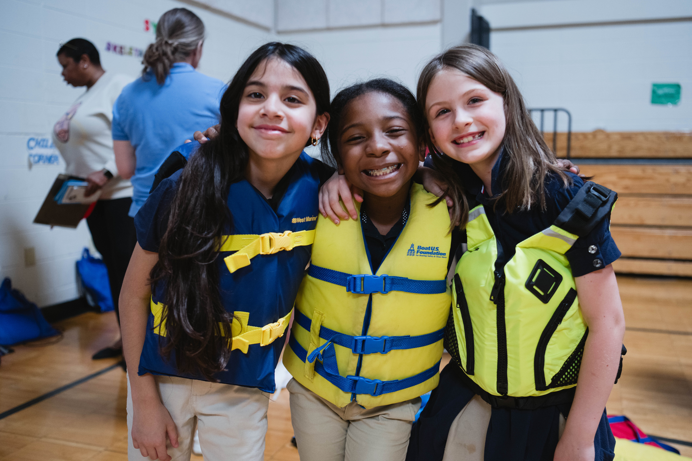

Our Mission
Our mission in Save The Children is to ensure every child grows up healthy, educated, and safe. Our belief is every child deserves the chance, hope and protection in a future.
Why We Matter
After a local emergency leading to a child losing access to school, we have enabled the child to return to classes through our learning support program.
How We Achieve Our Mission

Education
From the poorest communities in rural America to conflict-affect countries such as Ukraine, Save The Children ensures all children are educated. We help gain access to schools, books, learning supplies, and a safe learning environment to build a better future.

Healthcare
Save The Children keeps all children healthy as a leader in healthcare. We support programs that provide checkups, medicine, vaccinations, and care for the children and their families.

Emergency Care
In any moment of crisis or disaster, we are there to deliver food, water, shelter, and urgent care for children in danger. We have responded to dozens of crises around the world.

Child Protection
Save The Children is the first organization in the world to be devoted solely on protecting children from any harm. Keeping children safe from harm, exploitation, and violence is the very heart of everything that we do in Save The Children.
Our Impact
50+
Communities Reached
Over 10,000
Children Supported
More Than 500
Volunteers Involved
Be a Part of the Change
With your support, together, we can create a better world and a better future for all children and families in the world.
How You Can Help